Il link Zoom e lo Studybook
Prima della diretta ti mandiamo il link e lo Studybook, il PDF con cui segui la serata e fai gli esercizi. Un'ora prima ti ricordiamo il link.
Webinar gratuito su Zoom · per chi fa il semestre filtro
Gli argomenti restano tanti. Cambia l'ordine: prima li capisci, poi li fissi in memoria, poi li organizzi per l'esame.
Giovedì 12 novembre alle 21:00, in diretta su Zoom, il Dr. Fabrizio Bucci, Matteo Piazzo e Luca Pelliccia prendono un argomento di Biologia del semestre filtro, la sintesi proteica, e lo smontano davanti a te. Novanta minuti. Tu segui da casa con lo Studybook, un quaderno e una penna.
Bastano nome, cellulare ed email. Il link Zoom e lo Studybook ti arrivano prima della diretta.
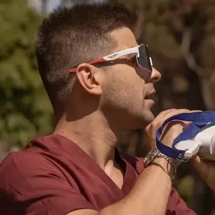
Dr. Fabrizio Bucci Matteo Piazzo
Matteo Piazzo Luca Pelliccia
Luca PellicciaMedicina in modalità facile
Cosa ricevi iscrivendoti
Prima della diretta ti mandiamo il link e lo Studybook, il PDF con cui segui la serata e fai gli esercizi. Un'ora prima ti ricordiamo il link.
Fabrizio ti spiega tutto il processo, per darti il contesto, e la traduzione nel dettaglio. Poi Matteo ti fa memorizzare la traduzione, e Luca ti mostra come organizzare l'esame. La mappa mentale completa te la regala Matteo.
Come sono fatte le 31 domande di ogni prova, e dove di solito si nasconde la trappola.
Gli ultimi minuti sono per te: chiedi a Fabrizio, Matteo e Luca quello che vuoi sul tuo modo di studiare.
Cos'è, in due righe
Una lezione online gratuita su Zoom, giovedì 12 novembre dalle 21:00 alle 22:30. Un medico, un campione italiano di memoria e uno studente di Medicina applicano il metodo del Portale dei Futuri Medici a un argomento vero del semestre filtro, e ti fanno vedere ogni passaggio. Non devi preparare niente: apri lo Studybook e tieni un quaderno accanto.
01 / Il programma della serata
Ognuna parte da un problema che hai già incontrato da settembre. Alcune risposte ti sorprenderanno, e in diretta puoi fare le tue domande a chi le dà.
E come cambiarlo senza buttare via quello che hai già studiato.
Giovedì vedi come si costruisce, con tutte e tre le materie insieme fin dalla prima settimana. Così la sera apri il libro sapendo già cosa fare, invece di passare mezz'ora a deciderlo.
Il segnale che una fonte ti sta facendo perdere tempo arriva presto: giovedì impari a riconoscerlo, e a scegliere quella giusta per ogni materia.
Si vede solo davanti a una domanda che non hai mai visto. Fabrizio ti mostra come allenare la comprensione, così quella domanda non ti trova scoperto.
È il numero con cui ha vinto il titolo italiano nel 2018. E come lo stesso principio ti aiuta a ritrovare un argomento di Biologia a settimane di distanza, proprio quando hai il foglio davanti.
Lì il distrattore non c'è: o hai il termine esatto, o hai uno spazio bianco. C'è un esercizio che lo fa uscire, e lo facciamo insieme.
Giovedì vedi dove se ne va il tempo della prova, domanda per domanda, e quali domande conviene lasciare per ultime.
Poi ti interroga come un professore che non si stanca mai (e non sbuffa). Luca te lo fa vedere dal vivo.
Spoiler: rileggere gli appunti e pensare «questo lo so» non conta. Giovedì vedi cosa fare al suo posto.
E come questa frase cambia il modo di esercitarti nelle settimane prima dell'appello. Arrivi alla prova sapendo com'è fatta e dove ti frega.
Gratis · Su Zoom · Gio 12 novembre, 21:00
02 / Quello che hai già provato
A metà novembre un metodo ce l'hai già. Probabilmente somiglia a uno di questi.
Il giorno dopo lo riconosci. All'esame però devi tirarlo fuori da solo, e riconoscere e ricordare sono due operazioni diverse.
La pagina diventa gialla, la testa resta uguale a prima. (Il libro, almeno, è venuto benissimo.)
Hai ricopiato il libro con la tua calligrafia. Le informazioni ci sono tutte, manca il filo che le tiene insieme.
Finisci prima. Quanto ti è rimasto lo scopri alla prima domanda formulata in modo diverso dal solito.
Tocca quelli che fai anche tu.
Ce lo avete scritto voi
allora mi spaventa il fatto che io abbia fatto il liceo classico e di conseguenza non sappia nulla di nessuna delle materie
per ora ho iniziato a guardarmi gli argomenti dal syllabus e a cercare di capirli dal libro delle superiori
però diciamo non so da dove iniziare
perché è molto difficile partire da zero su un programma così vasto
io da quando è iniziato il semestre seguo le lezioni poi quando torno a casa cerco di studiarle , qualche volta cerco di studiare due materie al giorno però quando ho i pomeriggi riesco a vedere solo una e con il tempo nn riesco a studiare tardi tipo fino a 00:00 perché sono stanca
non so se tu puoi darmi qualche consiglio in più per affrontare questo studio
non riesco a trovare il metodo giusto per studiare chimica soprattutto, diciamo che questo mi spaventa un po', per il resto non essendo proprio a zero credo di riuscire a fare tutto...ho solo paura che dimenticherò le cose ahahah ma insomma si quello farò pratica con le tante esercitazioni anche da settembre
Ho comprato dei libri per prepararmi al semestre e studio da quelli. Per ora studiare è una parola grande perché avendo fatto un liceo linguistico molte cose sono nuove e le lezioni vengono spiegate velocemente quindi non sempre riesco a capire. La materia con cui sto facendo più difficoltà è fisica, infatti è impossibile che riuscirò a passare l'esame. Poi mi sembra impossibile riuscire a finire tutto per la data degli esami e sapere le cose al meglio
insomma non tanto bene, e per ora un ambiente abbastanza tossico siamo tutti contro tutti, con un peso pesante addosso e la consapevolezza che la nostra entrata dipenda da un sistema che oggettivamente non funziona
solitamente io organizzo il mio studio suddividendo le cose da studiare giorno per giorno in modo tale da imparare un po' alla volta ma per bene e poi ripetere. La cosa che più mi spaventa è non riuscire a stare al passo e avere un metodo di studio sbagliato, anche se fino ad ora mi ha dato grandi risultati, però è un metodo che è andato bene per le superiori ma non so se andrà bene anche per l'università
Onestamente sto cercando di essere costante e fare qualcosa ogni giorno anche se magari non raggiungo l'obbiettivo che mi ero prefissata.Probabilmente la difficoltà sta comunque nel gestire tre materie in contemporanea
Ti dirò la verità approcciandomi a cose che non riprendo da un po' direi che i programmi intensi e diversi di queste materie mi preoccupano e non poco. Nonostante per me ci sia tempo comunque la concentrazione va via ne! momento di cui mi sento sopraffatta da tutto ciò che ho da studiare.
ciao, lo studio in realtà non lo organizzo troppo bene perché segue e prendo appunti a lezione che poi nel pomeriggio ricompio in bella per avere poi un quaderno con tutto. ovviamente però quando mi ritrovo a non capire degli argomenti, come ad esempio biologia, mi perdo e quindi non riesco più a seguire le lezioni in maniera produttiva.
complimenti per il tuo percorso!
io al momento seguo le lezioni al mattino, poi a casa sistemo gli appunti integrando col libro di e quando finisco i capitoli faccio quiz.
La parte più dura è sicuramente il tempo, perché sono ancora un po' lenta e un po' la concentrazione, però dipende dai giorni ahah
Allora io esco da un istituto tecnico agrario in cui non ho avuto la possibilità di trattare queste materie, quindi parto senza basi. Io ho bisogno di appunti che spieghino bene tutti gli argomenti.
Al momento ho iniziato a vedere qualcosa di chimica ma mi sento terribilmente indietro
Ammetto che ho cominciato a fare qualche riassunto ma non so da dove cominciare e dove mettere mani
Perché esco da un liceo delle scienze umane
Quindi la biologia, la chimica e fisica del semestre filtro non sono le stesse affrontate al liceo delle scienze umane haha
Per ora sto organizzando leggendo la teoria, poi un po' di ripasso a voce e infine faccio qualche domanda sull'argomento svolto, poi ciò che mi spaventa è che non riesca a tenere a mente tutti gli argomenti e me li dimentichi subito
La difficoltà ovviamente sta nella mole di contenuto da studiare, e il non avere la benché minima idea di quali cose o meno ti ritroverai all'esame
ho solo paura di non riuscire a studiare bene le cose
allora sono arrivata a studiare la 5 unità di chimica ma purtroppo non posso permettermi libri di testo quindi mi sento un po' disorientata, in questo periodo la cosa più dura è il non sapere cosa mi aspetta effettivamente e non sapere se basta ciò che sto studiando per superare il semestre
Grazie 🥰 apprezzo!
In realtà per ora la parte difficile e propriamente tempo, tra la stanchezza e tantissime ore perse nei mezzi di trasporto non sono praticamente mai a casa. Parto in ritardo, tanto che non ho ancor aniziato a studiare.
Sicuramente il tempo e la concentrazione sono il mio problema più grand, in qualche modo ho iniziato, solo che ho paura di perdermi dei pezzi, studiare troppo superficialmente. L'anno scorso penso sia andato storto il fatto che non ero consapevole della mole di studio che dovevo affrontare invece quest'anno bene o male ne sono abbastanza consapevole e sono più concentrata nello studio
la cosa che mi preoccupa di più è non riuscire a studiare tutto bene entro il tempo stabilito
infatti vorrei comprare il tb soprattutto per la biologia, ma ho paura che la studierei in maniera superficiale
io generalmente studio dai libri facendo schemi sul tablet però mi sento lenta e ho paura di non ricordare
il mio problema è che sto provando il semestre filtro alla vanvitelli e ieri ho fatto il test di ingresso ad ostetricia quindi mi sono arrestata medicina per fare ostetricia
Poi ho paura di non avere troppo tempo a disposizione
In quanto voglio tentare a fare anche l'imat…
Messaggi arrivati nelle ultime settimane da chi fa il semestre filtro. I nomi li abbiamo tolti. Passaci sopra, o toccali, per fermarli.
Spesso il problema non sono le ore. Ci sono passati anche loro: Fabrizio è stato bocciato al primo appello di Anatomia, Luca per un periodo ha pensato di cambiare facoltà. Il metodo che ti mostrano giovedì è nato da lì.
03 / Il metodo, in tre mosse
Facile da capire e da ricordare. L'esame resta un esame: quello che cambia è come ci arrivi.
Un'informazione che ha un contesto si richiama. Una frase imparata a memoria si perde appena la domanda cambia forma. Per questo si parte da una domanda semplice, a cosa serve, e poi il capitolo si spezza in pezzi piccoli che entrano uno alla volta.
Cosa fai tuPrima di ripetere ti chiedi a cosa serve, poi spezzi il capitolo in domande da una riga.
Con la tecnica PAV ogni passaggio diventa un'immagine paradossale, in movimento e vivida: un'immagine così si ritrova più facilmente di una riga di libro. A fine serata Matteo ti regala la mappa mentale completa dell'argomento.
Cosa fai tuTrasformi i passaggi in immagini, poi provi a ripescarli senza guardare.
Esiste la materia ed esiste l'esame, ripete Fabrizio. Ogni prova del semestre filtro ha 31 domande di due forme: a risposta multipla, dove il nemico è il distrattore, e a completamento, dove serve il termine esatto. Luca ti fa vedere come l'IA ti organizza tutto l'esame in pochi minuti e poi ti interroga.
Cosa fai tuRipassi ogni argomento in tutte e due le forme.
Provale qui sotto04 / Prova tu
Una a risposta multipla e una a completamento, sulla sintesi proteica. Sono un assaggio: giovedì sera Fabrizio parte da qui e smonta tutta la traduzione.
Risposta multipla
Quale codone dà il via alla traduzione?
Completamento
Gratis · Su Zoom · Gio 12 novembre, 21:00
05 / La sera, minuto per minuto
Si apre la stanza Zoom.Cinque minuti per entrare e aprire lo Studybook.
Dove sta il problema, e come si risolve.Partiamo da quello che ci avete scritto: non sapere da dove iniziare, la sensazione di imparare a memoria, le ore sul libro che la sera non lasciano niente. Poi tre storie di chi ne è uscito: Fabrizio e la bocciatura ad Anatomia, Luca e la facoltà che stava per lasciare, Matteo e le 1.811 cifre del Pi greco.
Lezione sulla sintesi proteica. Comprensione, con Fabrizio.Tutto il processo, per darti il contesto, e poi la traduzione nel dettaglio: prima capisci a cosa serve, poi la spezzi in domande da una riga.
Memorizzazione, con Matteo.Con la tecnica PAV memorizzi la traduzione: ogni passaggio diventa un'immagine, poi provi a ripescarli senza guardare. La mappa mentale completa della sintesi proteica te la regala Matteo.
Organizzazione, con Luca.L'IA ti organizza tutto l'esame in pochi minuti, poi ti interroga nella forma della prova: risposte multiple e completamenti.
Le tue domande, in chat.Rispondono tutti e tre in diretta. Negli ultimi minuti ti diciamo cos'è il Portale dei Futuri Medici, per chi vuole continuare.
Fine.Chiudi Zoom con un argomento in più e la mappa mentale di Matteo.
Si passano la parola sui tre pilastri del metodo, condividono lo schermo e spiegano la sintesi proteica passo per passo, dicendo ad alta voce perché fanno ogni scelta.
Segui sullo Studybook, fai gli esercizi, e quando un passaggio non ti torna lo scrivi in chat.
Niente di complicato, ma meglio saperlo prima di giovedì sera.
06 / Chi ti parla
Un medico, un campione di memoria e lo studente di Medicina che ha fondato il Portale dei Futuri Medici. Giovedì sera sono in diretta tutti e tre.
Il medico · porta il metodo dentro le materie
Al primo appello di Anatomia è stato bocciato allo scritto. Poi, nel lockdown, ha cominciato a disegnare mappe: «dare struttura alle cose ti permette di ricordarle». Negli anni dopo, non senza altri inciampi, è arrivato a 17 esami in due anni. Dal 2020 insegna anatomia, biologia e statistica.
17esami in due anni, tra cui Cardiologia e Neurologia
La memoria · ha costruito il protocollo del portale
Campione italiano di memorizzazione del Pi greco: titolo vinto a Udine il 14 marzo 2018, recitando a memoria 1.811 cifre dopo la virgola. Ha costruito il protocollo di memoria e richiamo su cui poggia il portale. Più di 700 persone hanno seguito i suoi percorsi.
1.811cifre del Pi greco recitate a memoria nel 2018
Studente di Medicina · Fondatore del Portale dei Futuri Medici
Ha cominciato con sottolineature e riassunti, e davanti al professore la mente si svuotava. Per un periodo ha pensato seriamente di cambiare facoltà. Poi ha incontrato Matteo e l'apprendimento efficace. Oggi è il fondatore del Portale dei Futuri Medici e unisce il metodo all'intelligenza artificiale: l'IA prepara il materiale, il metodo lo fa restare in testa.
16esami da luglio 2024 a luglio 2026, dopo 4 in tre anni
07 / Per chi è
Cosa ci scrivono
Messaggi arrivati da chi ha usato i nostri appunti, i video e le live. Li abbiamo messi qui tutti, uno sotto l'altro.
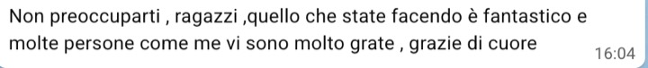
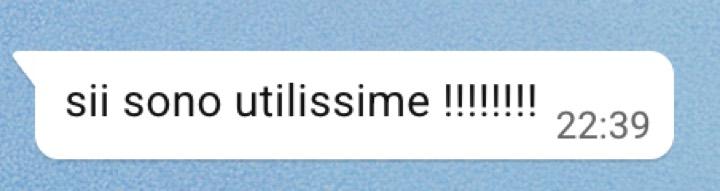
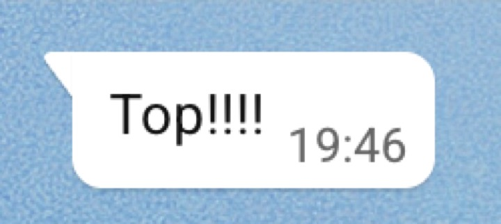
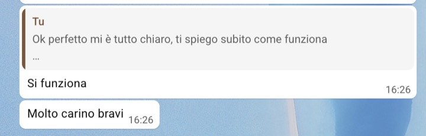
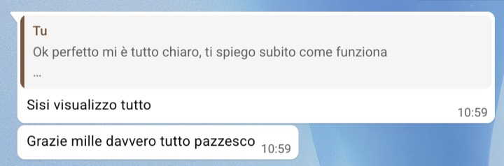
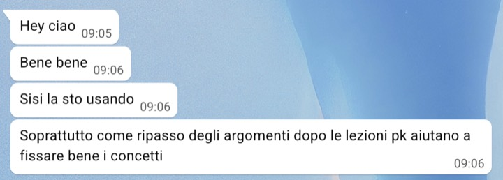
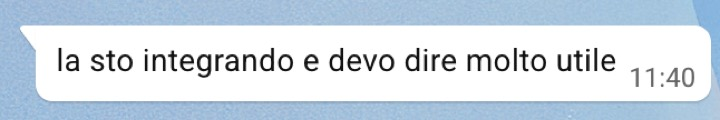
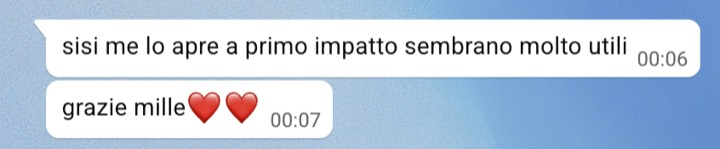
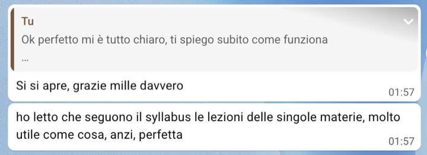
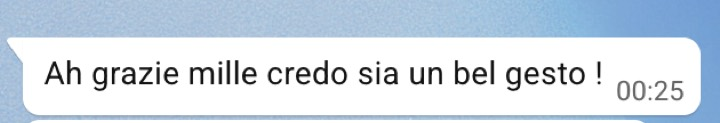
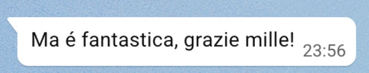
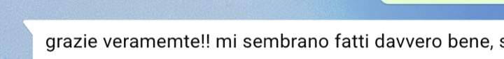
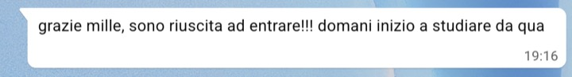
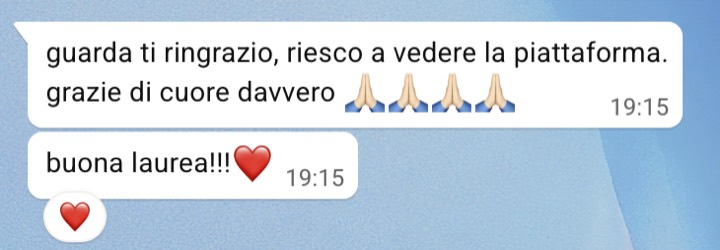
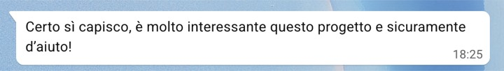
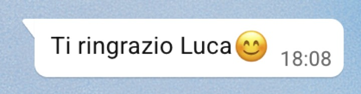
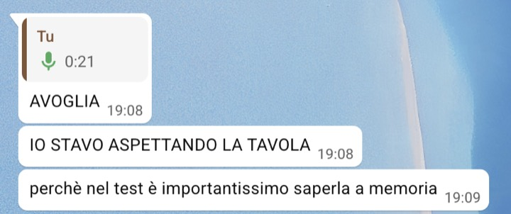
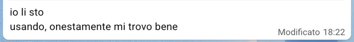
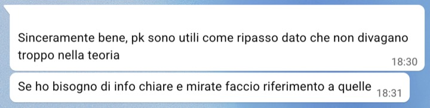
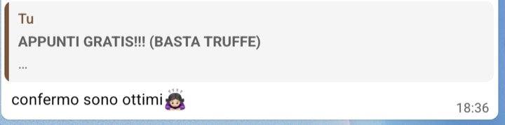
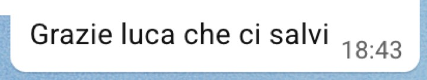
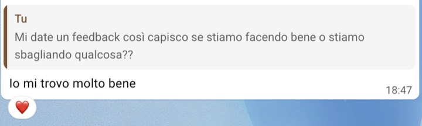
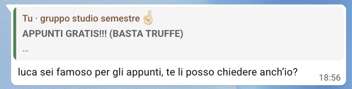
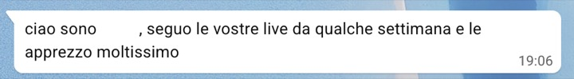
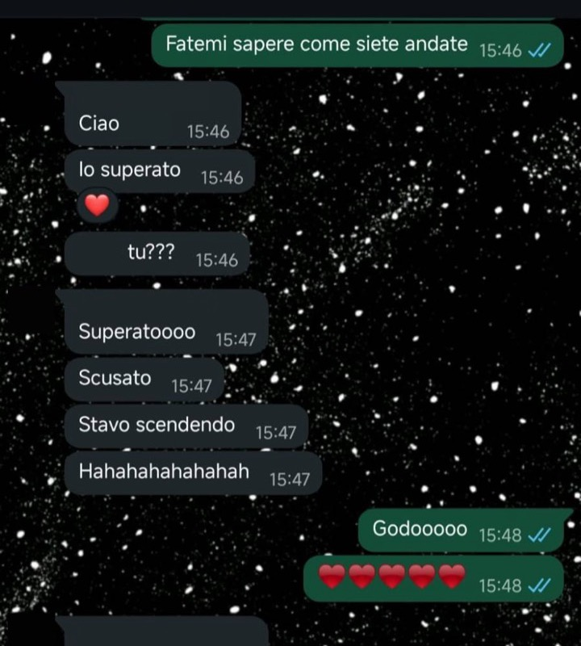
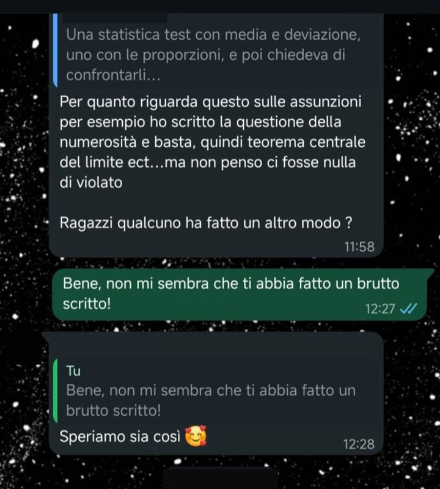
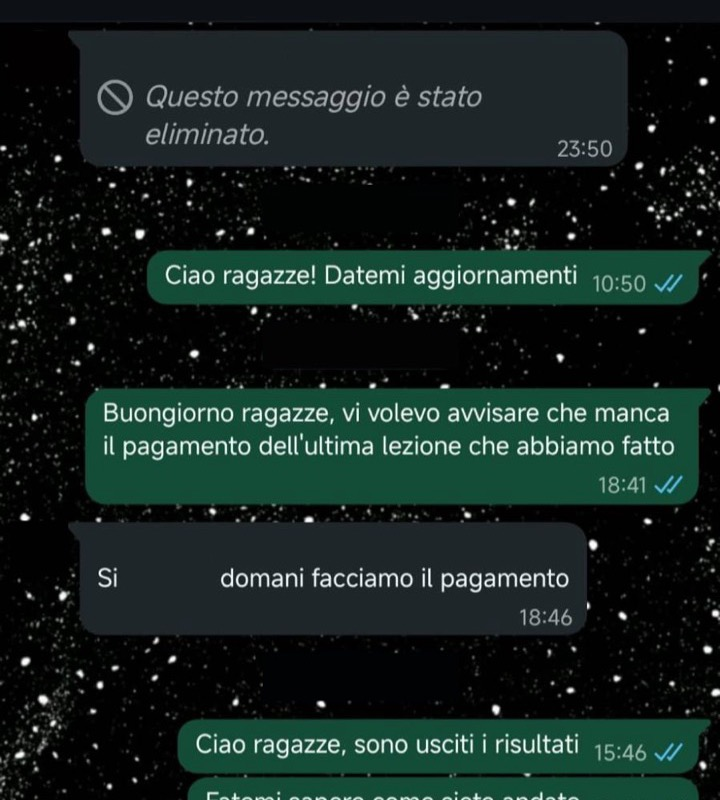
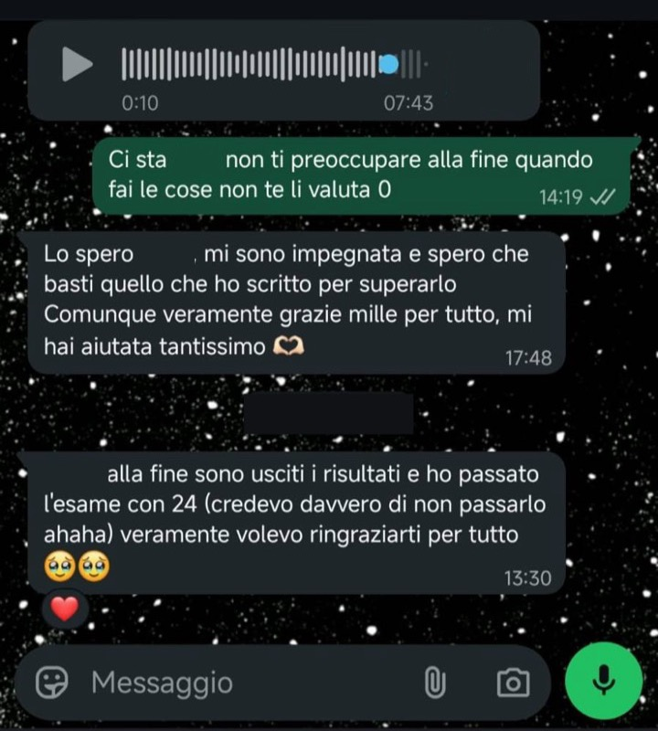
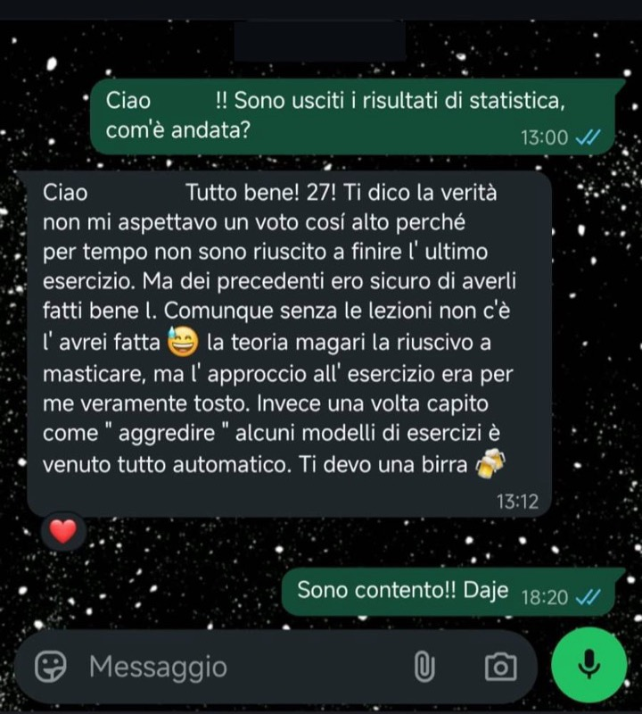
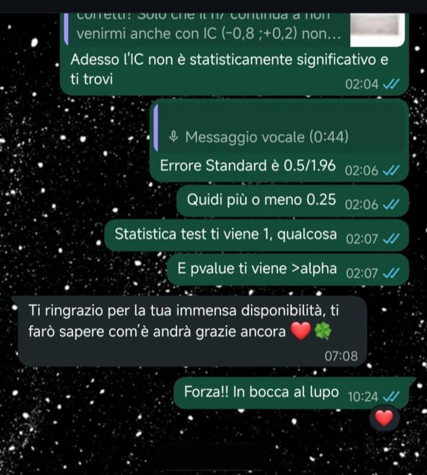
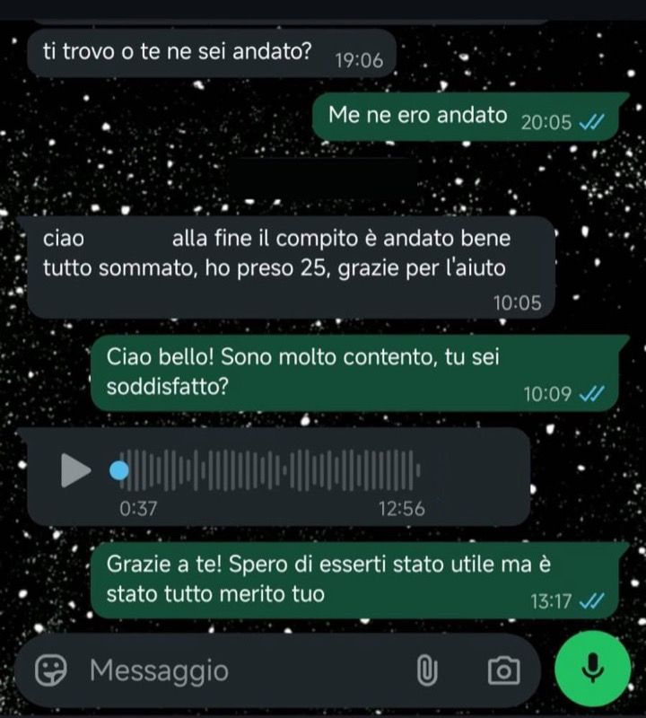
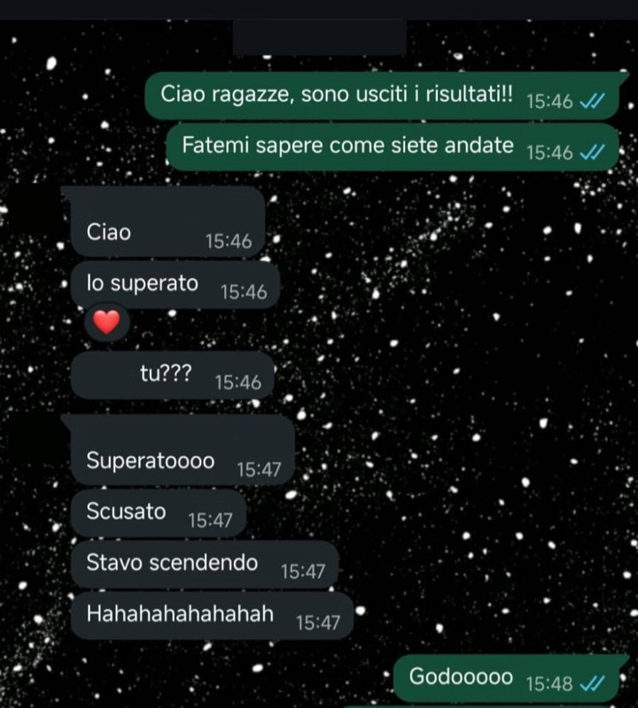
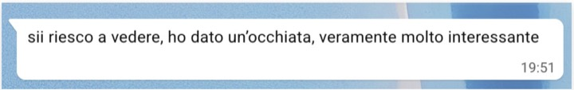
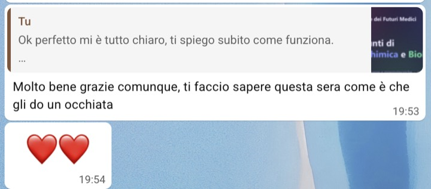
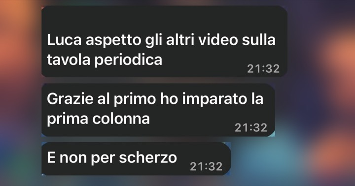
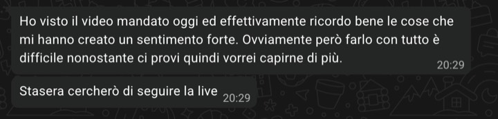
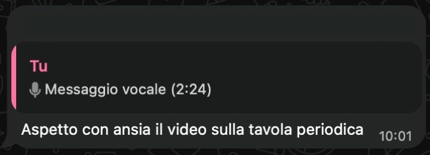
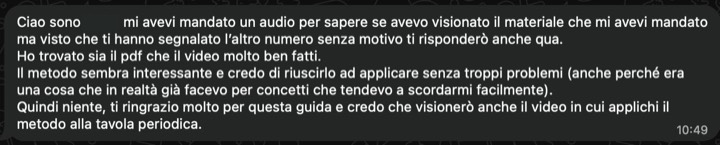
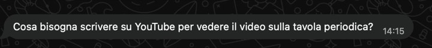
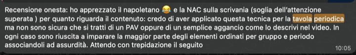
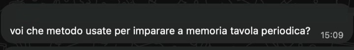
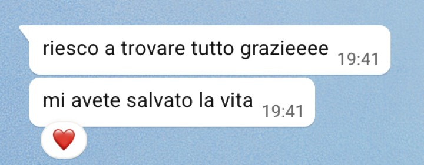
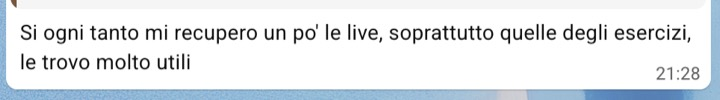
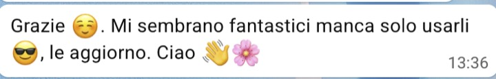
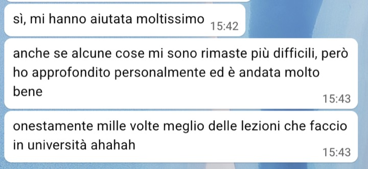
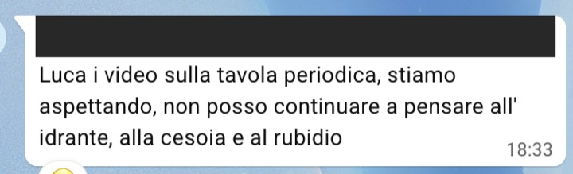
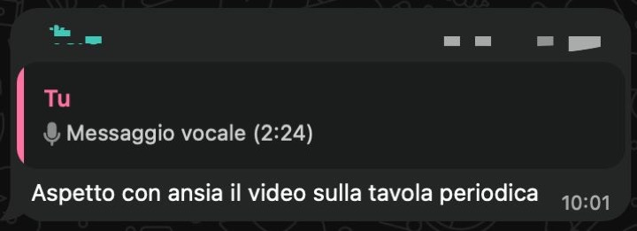
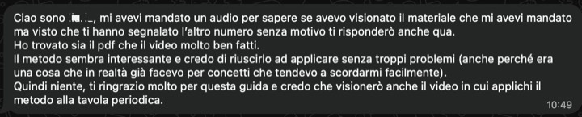
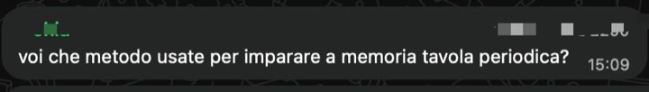
Schermate vere di WhatsApp, senza ritocchi: abbiamo coperto solo i nomi. Sono storie loro, nessuna è una promessa su di te.
08 / Prima di iscriverti
Sì. Ti iscrivi con nome, cellulare ed email e ricevi il link. Nessun pagamento, nessuna carta.
Non per forza: puoi entrare anche dal browser. Se hai già l'app, il link la apre da solo. Se non l'hai mai usato, prova il link qualche minuto prima delle 21.
Sì. Per lo Studybook e gli esercizi però uno schermo grande aiuta: se puoi, usa computer o tablet.
No. Entri con telecamera e microfono spenti. In chat scrivi solo se vuoi.
Entri lo stesso, con lo stesso link. La lezione sulla sintesi proteica comincia alle 21:15, e per seguirla conviene esserci dall'inizio.
Sì. Il metodo vale per qualsiasi materia da studiare. Gli esempi, però, sono presi dal semestre filtro.
Noi diamo risorse gratuite sempre, perché pensiamo che già così si possa fare molto. Per chi vuole approfondire abbiamo anche un affiancamento personalizzato, di cui parliamo alla fine della live. Nessun obbligo: la serata vale anche da sola.
Iscrizione gratuita
Novanta minuti per vedere come una materia difficile diventa facile da capire. Apri lo Studybook e prendi un quaderno: il resto lo facciamo insieme.
Ti aspettiamo giovedì 12 novembre, ore 21. Il link per entrare e lo Studybook arrivano prima dell'inizio. Mettilo in calendario adesso, così non te lo perdi.
Gratis. Niente newsletter: ti scriviamo solo per le live.
Medicina in modalità facile · Webinar gratuito, giovedì 12 novembre 2026, ore 21:00 (ora italiana). Il webinar presenta un metodo di studio e non promette l'esito degli esami. Zoom è un marchio di Zoom Video Communications, Inc.